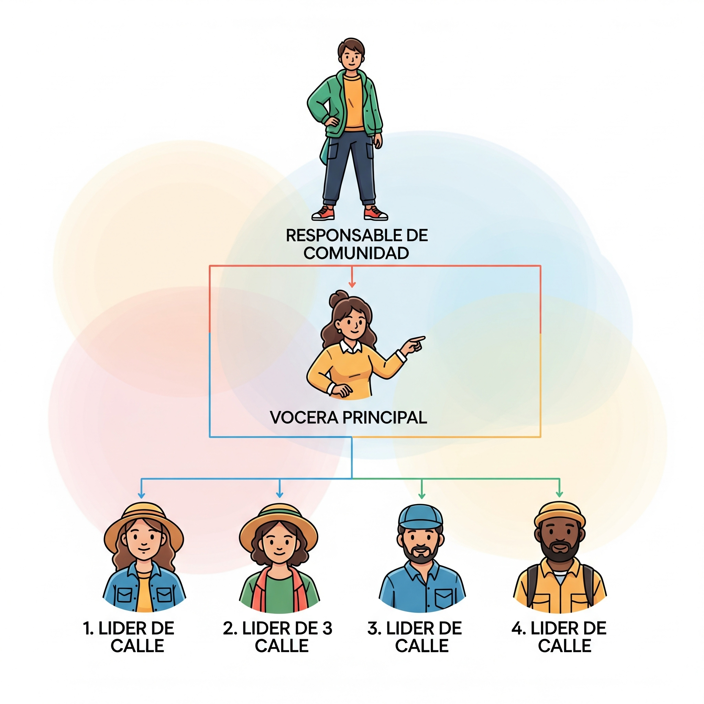
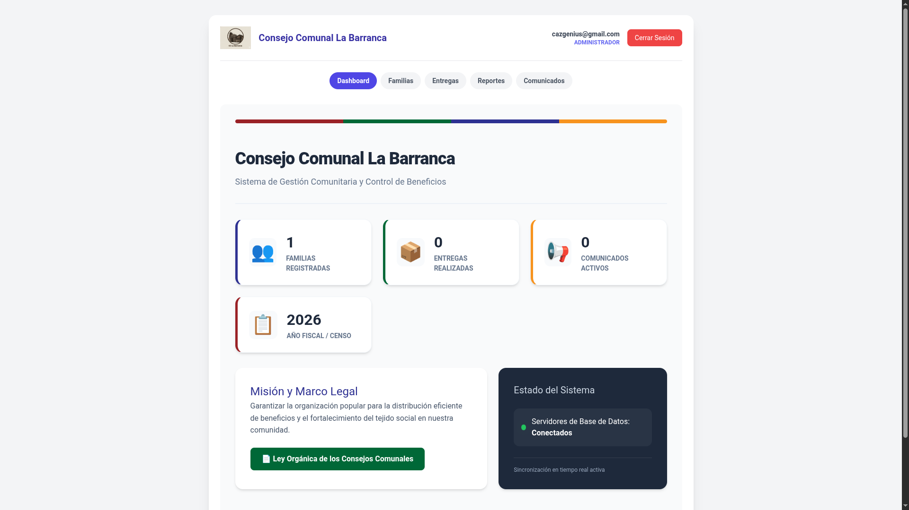
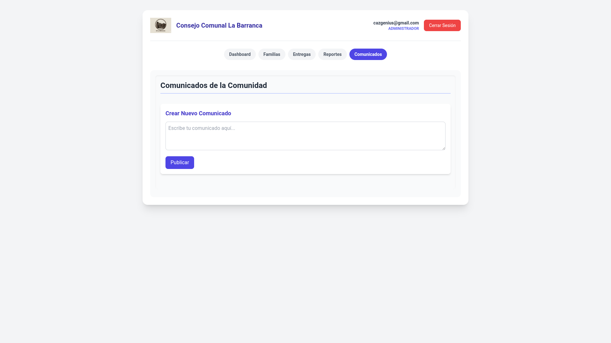

MINISTERIO DEL PODER POPULAR PARA LA EDUCACIÓN UNIVERSITARIA, CIENCIA Y TECNOLOGÍA
UNIVERSIDAD POLITÉCNICA TERRITORIAL DEL ESTADO TRUJILLO "MARIO BRICEÑO IRAGORRY"
PROGRAMA NACIONAL DE FORMACIÓN EN INFORMÁTICA (PNFI) — TRAYECTO III
Sistema de Información Web para la Gestión Administrativa
del Consejo Comunal "La Barranca"
Proyecto Socio-Tecnológico — Aplicación de los Marcos Metodológicos Propios LAZY y LOL
Nombre de la Organización
Instancia de participación, articulación e integración del poder popular.
Regida legalmente por la Ley Orgánica de los Consejos Comunales (2009), mediante la cual los ciudadanos ejercen directamente la gestión de políticas públicas y proyectos de desarrollo comunitario.
- Comunidad: Barrio La Barranca.
- Parroquia: Matriz.
- Municipio: Trujillo.
- Estado: Trujillo, República Bolivariana de Venezuela.
En un escenario real de ingeniería de software, el Consejo Comunal La Barranca opera como nuestro Cliente directo: definió los puntos de dolor, aportó los datos del censo, validó los requerimientos funcionales y asume la operación del sistema.
Estructura Organizativa de la Organización
Conforme a la ley comunal, el Consejo Comunal La Barranca opera mediante tres unidades clave y la vocería de calle:
- Vocería Principal: Coordinación operativa general.
- Líder de Calle: Mgtr. Evelyn Hackett — articulación directa con las familias del sector.
- Unidad Ejecutiva: Comités de Trabajo (Alimentación, Salud, Hábitat y Servicios).
- Unidad Administrativa y Financiera: Administración y cuentas comunitarias.
- Unidad de Contraloría Social: Fiscalización de recursos y contraloría vecinal.
- Líderes de Calle: Articuladores casa por casa.

Misión y Visión de la Organización
"Promover la organización, la participación activa y la autogestión de la comunidad de La Barranca, facilitando el registro, seguimiento y control de las familias beneficiarias, así como la planificación y ejecución de proyectos sociales, con el fin de mejorar la calidad de vida de sus habitantes y fortalecer la contraloría ciudadana sobre los recursos y programas que les corresponden."
"Ser una instancia comunitaria modelo en el estado Trujillo, reconocida por su gestión transparente, eficiente y participativa. El Consejo Comunal La Barranca aspira a contar con herramientas tecnológicas que centralicen y digitalicen su información, garantizando que cada familia esté debidamente registrada, que los beneficios sean distribuidos con equidad y trazabilidad, y que los ciudadanos tengan acceso a información clara y oportuna."
Valores y Correspondencia con el Proyecto
Asegurar que cada familia registrada reciba los beneficios sociales correspondientes sin duplicidades ni exclusiones arbitrarias.
Disponibilidad de reportes auditables y carteleras de comunicados para que cualquier habitante conozca el destino de los recursos.
Control directo y seguro de los datos censales en manos del propio poder popular organizado, sin dependencias externas.
Cierre del Primer Bloque: Con la identificación de la organización comunitaria, su estructura, misión y visión, cedo la palabra a mi compañero Richard Godoy para continuar con las organizaciones vinculadas, propósitos, justificación y línea de investigación.
Nombre de las Organizaciones Vinculadas
El proyecto socio-tecnológico articula coordinadamente cinco instituciones clave:
Ministerio del Poder Popular para las Comunas y los Movimientos Sociales: Establece la normativa jurídica comunal, validación de vocerías y políticas nacionales de gestión popular.
Unidades de Batalla Bolívar-Chávez: Organización sociopolítica territorial que apoya la articulación y logística en las jornadas de alimentación y distribución comunitaria.
Cliente y Beneficiario Principal: Propietaria de los datos del censo; fungió como cliente real al definir y validar los requerimientos funcionales, y asume la operación activa del software.
Institución Educativa Vecinal: Presta sus instalaciones físicas para la realización de asambleas ciudadanas, censos presenciales y encuentros comunitarios.
Casa de estudios formadora que aporta el marco metodológico, asesoría técnica docente y evaluación académica del software desarrollado.
Propósitos (General y Específicos)
Desarrollar un sistema de información web para la gestión administrativa del Consejo Comunal "La Barranca", que automatice el registro de familias, el control de la distribución de beneficios y la generación de reportes estadísticos.
Determinar los requerimientos funcionales y no funcionales del sistema mediante el marco analítico LAZY.
Diseñar la estructura integral del sistema de información web (arquitectura lógica, modelo NoSQL y seguridad RBAC).
Implantar el sistema de información web para el Consejo Comunal "La Barranca" (codificación, pruebas unitarias/UAT, despliegue y capacitación).
Árbol de Objetivos del Proyecto
El árbol de objetivos traduce las causas y efectos del diagnóstico en medios técnicos y fines de impacto:
- Implantación de una base de datos centralizada y reactiva en la nube.
- Módulo de trazabilidad digital por cédula para entrega de insumos.
- Generación instantánea de reportes y demografía en tiempo real.
Erradicación de listas manuales extraviadas, justicia distributiva sin dobles asignaciones y fortalecimiento de la contraloría social comunitaria.

Justificación Teórica, Técnica y Legal
Sustentada en la Teoría General de Sistemas (Bertalanffy) y los Sistemas de Información (Laudon & Laudon). Los datos del censo se transforman en flujos de información estructurados y confiables para la toma de decisiones comunitarias.
Stack moderno JavaScript + React.js + Firebase BaaS. Garantiza interfaces reactivas de alta velocidad, base de datos NoSQL Cloud Firestore en tiempo real y costo cero de infraestructura mediante la capa gratuita de Google.
Fundamentada en la CRBV (Art. 110: interés público de la ciencia y tecnología), LOCTI (Arts. 1, 2, 11), la Ley Orgánica de los Consejos Comunales (2009) y el Decreto Ley de Intercambio Electrónico de Datos (2012).
Impacto Social y Beneficiarios
- Vocería Principal y Líderes de Calle: Ahorro del 85% del tiempo en la transcripción de censos y actas de jornadas.
- Más de 300 Familias y Habitantes: Certeza y equidad en la recepción de beneficios sociales (CLAP, gas, jornadas de salud) y emisión ágil de constancias de residencia.
- Estudiantes del PNFI: Validación práctica de competencias de ingeniería de software.
- Comunidad en General: Clima de confianza vecinal y transparencia en la rendición de cuentas públicas.
- Ministerio de Comunas: Disponibilidad de registros censales confiables y digitalizados.
- Otros Consejos Comunales: Disponibilidad de un software libre, abierto y adaptable a sus propias realidades.
Línea de Investigación del PNFI y Plan de la Patria
Sistemas de Información y Modelado de Datos
Área de Conocimiento: Programación e Ingeniería del Software (Trayecto III PNFI - UPTTMBI).
Integra curricularmente: Programación Web, Bases de Datos, Ingeniería de Software y Proyecto Socio-Tecnológico III.
- Objetivo Nacional 1.5: Desarrollar las capacidades científico-tecnológicas vinculadas a las necesidades del pueblo, impulsando tecnologías de información soberanas.
- Objetivo Nacional 2.5: Consolidación del Estado Popular y Comunal mediante herramientas informáticas de autogestión libre.
Cierre del Bloque Contextual y Estratégico: Concluyo mi exposición de las organizaciones vinculadas, propósitos, justificación, impacto social y línea de investigación. A continuación, cedo la palabra a mi compañero Gabriel Morales para la defensa técnica del proyecto.
Presentando LAZY y LOL — Dos Marcos Propios al Mundo
Propuestos por Morales (2026) como respuesta de ingeniería a un problema real: la fricción metodológica de los proyectos socio-tecnológicos venezolanos.
Listen · Analyze · Zoom · Yield
Resuelve el problema histórico de la desconexión entre el diagnóstico social etnográfico y la especificación técnica de software. Cada necesidad comunitaria queda trazada a un Requisito Funcional verificable mediante un artefacto formal: la Bitácora de Cruce.
Logic · Oversight · Layering
Rige la construcción incremental del software asegurando alineamiento permanente con los requerimientos capturados por LAZY. Integra por primera vez el uso explícito de pares de Inteligencia Artificial Generativa como herramienta de supervisión técnica.
Estas metodologías fueron concebidas para empresas con equipos numerosos, presupuestos definidos y roles rígidamente especializados. Aplicarlas directamente en un PSI/T comunitario —con recursos escasos, desarrolladores universitarios y usuarios sin formación técnica— genera una fricción metodológica severa. LAZY y LOL son la respuesta.
El Marco LAZY: De la Voz Comunal al Requisito Formal
Escucha Activa: Inmersión etnográfica sin preconcepciones técnicas. Se registran las historias, los dolores y las frustraciones reales de los voceros y jefes de calle.
Análisis de Datos: Procesamiento cualitativo y cuantitativo. Se identifican patrones: duplicidades censales, pérdida de listas de entrega, ausencia de estadísticas.
Foco Crítico: Priorización de las necesidades más urgentes mediante bocetado de baja fidelidad. La comunidad valida el alcance del MVP antes de escribir una línea de código.
Producción de la Bitácora: Formalización de los RFs (YLD-00 a YLD-06) y RNFs clasificados por ISO/IEC 25010, en un artefacto trazable único.
Sustituye las tradicionales Historias de Usuario con un documento de transferencia estructurado. Cada necesidad comunitaria queda ligada a un módulo de software concreto con sus criterios de aceptación técnicos:
| ID | Módulo | Requisito Funcional (RF) | Requisito No Funcional (RNF) |
|---|---|---|---|
| YLD-00 | Autenticación | Acceso con correo y contraseña, verificación de rol | Seguridad: acceso denegado sin sesión activa |
| YLD-01 | Familias | Registro de núcleo familiar, sin duplicar cédulas | Usabilidad: guardado reactivo sin recargar página |
| YLD-03 | Beneficios | Asignar recepción por familia con timestamp | Trazabilidad: timestamp de servidor inalterable |
| YLD-05 | Reportes | Demografía en tiempo real por onSnapshot | Rendimiento: actualización sin recarga |
El Marco LOL: Construcción Ágil sobre la Bitácora
LOL toma el artefacto de LAZY y guía la construcción modular del software. Sus tres pilares:
Cada decisión de arquitectura, base de datos y stack tecnológico debe estar explícitamente justificada con la Bitácora de Cruce como fuente de verdad.
En práctica: La elección de React + Firebase se justificó porque YLD-05 exige actualización en tiempo real (onSnapshot) y YLD-00 exige autenticación delegada sin servidor propio.
Auditoría constante de calidad, seguridad y coherencia. Integra explícitamente el uso de IA Generativa como par de programación, una innovación frente a marcos que ignoran este paradigma.
En práctica: 8 suites / 43 pruebas Jest automatizadas + Firebase Emulator + UAT en campo con la líder de calle.
El software se construye en iteraciones acumulativas y estables. Ninguna capa superior arranca hasta que la inferior esté probada y aprobada.
En práctica: Auth → Familias → Entregas → Constancias. Cada capa añade valor sin romper la anterior.
LAZY captura la realidad social → La Bitácora la formaliza → LOL la convierte en software funcional
Modalidad y Técnicas de Investigación
Investigación-Acción Participativa y Transformadora (IAPT): Los investigadores no actúan como observadores externos pasivos, sino como agentes de cambio sociotécnico junto a los voceros comunales para resolver su problemática real mediante una solución tecnológica funcional.
- Análisis Cualitativo: Categorización semántica de requerimientos vecinales.
- Modelado Conceptual: Entidades y relaciones comunales.
- Análisis Cuantitativo Descriptivo: Muestreo censal y estadísticas.
- Observación Directa Participante: Registro sistemático in situ de jornadas de entrega y asambleas.
- Entrevistas no Estructuradas: Diálogos a profundidad con la Líder de Calle (Mgtr. Evelyn Hackett) y líderes vecinales.
- Análisis Documental: Revisión minuciosa de cuadernos de censo en papel, carpetas de actas y formatos existentes.
Marco Analítico LAZY y la Bitácora de Cruce
Marco de cuatro fases diseñado para conectar el diagnóstico social con la ingeniería de requisitos sin pérdidas semánticas:
Escucha Activa: Diálogos etnográficos con voceros sin imponer tecnicismos iniciales para entender sus dolores reales.
Análisis de Procesos: Descomposición del flujo manual: registro, cotejo de cédulas y entrega de insumos.
Foco Crítico: Selección del Producto Mínimo Viable (MVP) y bocetado de validación con los usuarios.
Bitácora de Cruce: Formalización final de Requisitos Funcionales y No Funcionales listos para desarrollo.
Documento de transferencia formal emitido al cierre de Yield. Cada necesidad comunitaria expresada por los voceros queda trazada unívocamente a un Requisito Funcional (RF-01 a RF-06) y a sus Requisitos No Funcionales (RNF-01 a RNF-04), garantizando que ningún requerimiento se pierda al iniciar la codificación.
Marco de Desarrollo Ágil LOL frente a Modelos Tradicionales
Metodologías como Scrum, XP o RUP fueron creadas para corporaciones con presupuestos, grandes equipos y roles especializados. En un PSI/T comunitario (recursos escasos, desarrolladores universitarios y usuarios sin formación técnica) generan una fricción metodológica severa.
Inspirados en la filosofía de adaptación que llevó a Kent Beck a crear XP frente al modelo en cascada, formulamos el marco LOL (Logic, Oversight, Layering), incorporando explícitamente el desarrollo asistido por pares de IA.
- Logic (Lógica deliberada): Toda decisión de arquitectura y base de datos debe estar técnicamente fundamentada en los RF.
- Oversight (Supervisión continua): Auditoría constante de consistencia, validación UAT en campo y suite de pruebas automatizadas.
- Layering (Construcción por capas): Desarrollo incremental modular donde cada capa se monta sobre la anterior ya estabilizada.
Plan de Acción y Cronograma de las 5 Fases LOL
El desarrollo integral del SIW-CC se ejecutó en 18 días de trabajo enfocado:
Bitácora de Cruce y setup
React 18 + TailwindCSS
Logic & Layering (Gabriel Morales): Modelado de datos, arquitectura cliente-BaaS, codificación de componentes, integración y despliegue.
Oversight / Auditoría (Richard Godoy y Josué Abraham Ortuño): Auditoría de requisitos, supervisión de entregables, verificación de consistencia y validación funcional.
Planificación (Iteración 0) y Diseño
Días 1 al 4. Se procesó la Bitácora de Cruce generada en LAZY, traduciendo cada requerimiento comunitario a especificaciones técnicas concretas:
- Elección de arquitectura SPA en React y backend serverless en Google Firebase.
- Configuración del repositorio Git y variables de entorno seguras.
- Definición del esquema base de autenticación y control de acceso.
Estructuración técnica bajo el principio Logic:
- Modelo Documental NoSQL: Colecciones principales (
families,deliveries) y sub-colecciones (members,receipts) para consultas instantáneas deO(1). - Matriz de Roles RBAC: Definición de 4 perfiles (Administrador, Vocera Principal, Líder de Calle e Invitado).
- Diseño de Interfaz: Wireframes orientados a interfaces accesibles con fuentes legibles y alto contraste.
Codificación: Las Tres Iteraciones LOL
Construcción modular bajo el principio Layering: cada módulo se asienta sobre la capa anterior validada:
Días 5 al 10. Desarrollo de FamilyManagement.js y MemberManagement.js. Censo digitalizado con listeners en tiempo real (onSnapshot) de Firestore, validación de cédulas y cálculo automático de integrantes.
Días 11 al 15. Desarrollo de DeliveryEvents.js y módulo de métricas. Control de distribución de beneficios por familia con actas de recepción y gráficos de demografía en tiempo real.
Días 16 al 18. Desarrollo de CertificateGenerator.js para emisión digital de constancias de residencia, módulo público de Comunicados y refactorización responsive en TailwindCSS.
Principio Layering en acción: Al finalizar la Iteración 1 ya existía un censo funcional; sobre este se montó la distribución de la Iteración 2, y sobre ambas se añadieron las constancias de la Iteración 3.
Pruebas y Control de Calidad (Oversight)
Se implementaron 8 suites de prueba y 43 casos de prueba unitarios y de componentes cubriendo autenticación, validación de cédulas, gestión de familias, eventos y constancias.
$ npm test -- --watchAll=false
PASS src/__tests__/FamilyManagement.test.js
PASS src/__tests__/DeliveryEvents.test.js
PASS src/__tests__/Auth.test.js
Test Suites: 8 passed, 8 total
Tests: 43 passed, 43 total
Snapshots: 0 total
Time: 3.421 sEntorno local aislado que simula Cloud Firestore y Firebase Auth. Permitió verificar que las firestore.rules bloquean inyecciones y accesos no autorizados sin costo ni peligro en producción.
Sesiones prácticas en campo con la Líder de Calle (Mgtr. Evelyn Hackett), validando la usabilidad, legibilidad y flujo de registro con datos reales.
Lanzamiento, Despliegue y Capacitación
La aplicación fue compilada con npm run build y desplegada en la CDN global de Google Firebase Hosting con certificado SSL/HTTPS automático y alta velocidad de carga.
Jornada formativa presencial con los líderes de calle y la vocería principal, enseñando el manejo del censo digital, la búsqueda de familias y la emisión de actas.
Entrega formal del Manual de Usuario (guía visual ilustrada paso a paso) y el Manual Técnico (documentación de código, esquemas NoSQL y despliegue).
Arquitectura Tecnológica del SIW-CC
El sistema opera como una Single Page Application (SPA) desacoplada, conectada a la infraestructura backend de Google Firebase:
- Frontend: React 18, TailwindCSS para estilos responsive, Lucide React para iconografía accesible.
- Backend BaaS: Firebase Cloud Firestore como motor de base de datos NoSQL reactivo; Firebase Auth para gestión criptográfica de sesiones.
- Hosting: Firebase Hosting con CDN global y caché perimetral.
Se aplicó el modelo de amenazas STRIDE:
- Spoofing: Autenticación Firebase con tokens JWT.
- Tampering: Reglas declarativas en
firestore.rulesque validan esquema y tipos. - Elevation of Privilege: Verificación estricta de roles RBAC en cada lectura y escritura.
Autenticación y Control de Roles (RBAC)

Inicio de sesión seguro para la Vocería Principal y Líderes de Calle con validación criptográfica de contraseñas mediante Firebase Auth.
Permite el acceso liviano a los vecinos del sector identificándose por su nombre, habilitando exclusivamente la visualización de los comunicados comunitarios públicos sin exponer información censal sensible.
Panel de Control (Dashboard) Central

Al iniciar sesión, el vocero accede a una consola con métricas clave actualizadas instantáneamente mediante listeners reactivos de Firestore:
- Total de Familias Censadas: Conteo automático de núcleos familiares activos.
- Total de Habitantes: Sumatoria en vivo de todas las cargas familiares.
- Eventos de Entrega Activos: Estado de las jornadas CLAP o beneficios en curso.
Censo Familiar Digital y Gestión de Integrantes

Sustituye por completo los antiguos cuadernos de hojas sueltas:
- Ficha de Hogar: Registro del Jefe de Familia con validación de C.I única, dirección, teléfono y sector de residencia.
- Integrantes Familiares: Sub-colección dinámica para vincular hijos, adultos mayores o dependientes, especificando parentesco, edad y condición de salud.
- Búsqueda Instantánea: Filtro en milisegundos por cédula o apellido.
Eventos de Entrega y Trazabilidad de Beneficios

Control exacto de las jornadas de distribución comunitaria (bolsas CLAP, cilindros de gas, combos proteicos):
- Creación de la Jornada: Nombre, fecha y tipo de beneficio distribuido.
- Cotejo y Despacho: Búsqueda del jefe de hogar y marcado de "Entregado" con registro de fecha y hora exacta.
- Prevención de Fraude: El sistema bloquea automáticamente entregas dobles para un mismo hogar en la misma jornada.
Tablero Estadístico y Demografía Poblacional

Generación automatizada de reportes demográficos sin necesidad de tabular manualmente:
- Distribución Etaria: Conteo de niños, adolescentes, adultos y personas de la tercera edad.
- Pirámide Poblacional: Segmentación por género y condiciones especiales.
- Soporte para Toma de Decisiones: Información lista para solicitar medicamentos o insumos ante entes gubernamentales.
Constancias Comunitarias y Cartelera Digital


Constancias Digitales: Generación en segundos de documentos membretados oficiales listos para imprimir con firma y sello.
Cartelera de Comunicados: Canal oficial donde los voceros publican avisos de reuniones, cortes de servicio o convocatorias comunitarias con acceso abierto para los vecinos.
Cumplimiento de los Propósitos del Proyecto
Se determinaron y formalizaron la totalidad de Requisitos Funcionales y No Funcionales mediante las cuatro fases del marco LAZY y la entrega de la Bitácora de Cruce.
Se diseñó una arquitectura cliente-BaaS desacoplada, el esquema NoSQL en Cloud Firestore con control RBAC y una interfaz adaptada bajo el principio Logic de LOL.
Se codificó, probó con 43 pruebas automatizadas Jest, validó en campo con la Líder de Calle y se desplegó en Firebase Hosting con capacitación y manuales.
Limitaciones de la Investigación
Intermitencia del servicio eléctrico y fluctuaciones en la conectividad a internet en el sector La Barranca durante las jornadas de campo, lo que motivó optimizaciones en el consumo de datos.
Cierto grado de resistencia al cambio y timidez frente al uso de computadoras en algunos voceros adultos mayores, superado gracias a la sencillez visual del sistema y a la capacitación presencial.
El sistema fue validado y ajustado específicamente a la realidad operativa del Consejo Comunal "La Barranca", requiriendo parametrizaciones adicionales para su replicación masiva.
Recomendaciones del Proyecto
- Realizar jornadas semestrales de actualización del censo digital.
- Custodiar bajo llave las credenciales del usuario Administrador.
- Promover que los vecinos consulten la cartelera digital desde sus teléfonos.
- Implementar capacidades Offline-First avanzadas mediante Service Workers e IndexedDB (PWA).
- Incorporar mapas georreferenciados con la librería Leaflet para ubicar cada vivienda satelitalmente.
- Exportación nativa de actas en PDF descargables.
- Institucionalizar el uso de los marcos LAZY y LOL en los proyectos sociotecnológicos del PNFI.
- Crear un repositorio central universitario para alojar y mantener proyectos comunales libres.
Disponibilidad del Código y Repositorio
El código fuente del SIW-CC está completamente versionado, comentado y disponible públicamente bajo licencia libre para su auditoría y réplica por otros consejos comunales:
- Repositorio GitHub: Arquitectura modular en componentes reutilizables de React.
- Reglas de Seguridad:
firestore.rulesauditadas e incluidas en el control de versiones. - Documentación Completa: Manual de Usuario y Manual Técnico adjuntos al expediente de grado.
Se realizó la entrega de credenciales maestras y documentación a la Líder de Calle Mgtr. Evelyn Hackett, consolidando la autogestión comunitaria.
¡Muchas Gracias por su Atención!
"Las computadoras son increíblemente rápidas, precisas y estúpidas; los seres humanos son increíblemente lentos, imprecisos y geniales; juntos somos poderosos más allá de toda medida."
— Albert Einstein
Institución: Universidad Politécnica Territorial del Estado Trujillo "Mario Briceño Iragorry" (UPTTMBI)
Comunidad: Consejo Comunal "La Barranca" — Trujillo, 2026